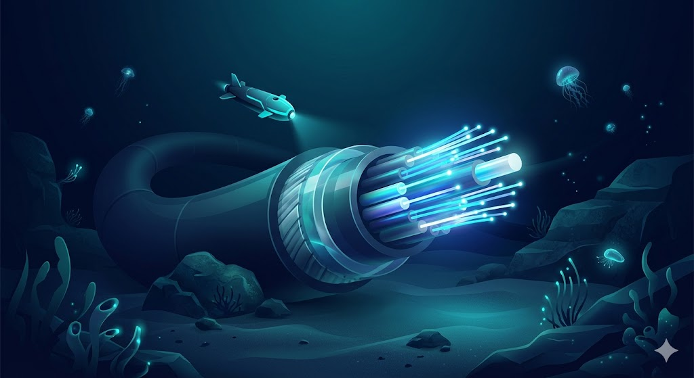
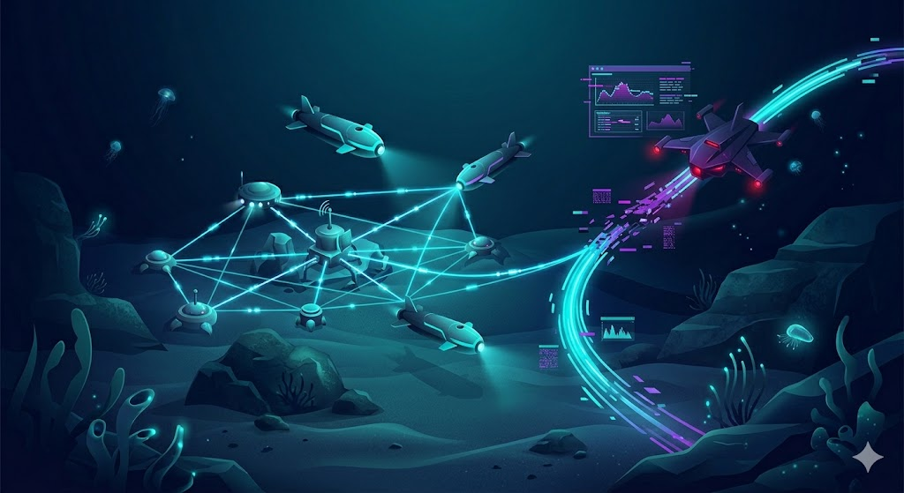
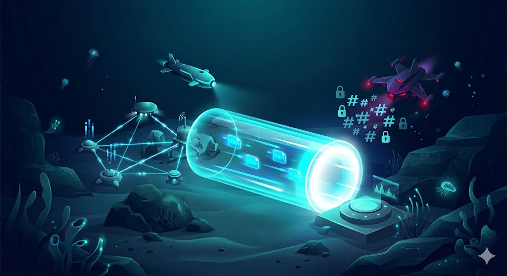

“Conservare e utilizzare in modo durevole gli oceani, i mari e le risorse marine per uno sviluppo sostenibile”
Oggi la stabilità globale non dipende solo dai confini terrestri, ma dalla sicurezza dei fondali marini. Incidenti ai cavi in fibra ottica nel Mar Baltico e nel Mar Rosso hanno dimostrato quanto le infrastrutture sottomarine siano vulnerabili.
Ma c'è un rischio ancora più sottile: l'attacco ai sensori oceanografici. Per nascondere un disastro ambientale, non serve tagliare un cavo; basta manipolare le informazioni che viaggiano su di esso.

La salute degli oceani (acidificazione, correnti) è monitorata dall'IoUT (Internet of Underwater Things): reti di boe intelligenti e droni (AUV).

I dati non devono solo arrivare, devono essere veri. Come studiato, applichiamo i principi della sicurezza di rete.

Dashboard interattiva: verifica dell'Integrità del Dato tramite protocolli VPN Site-to-Site.